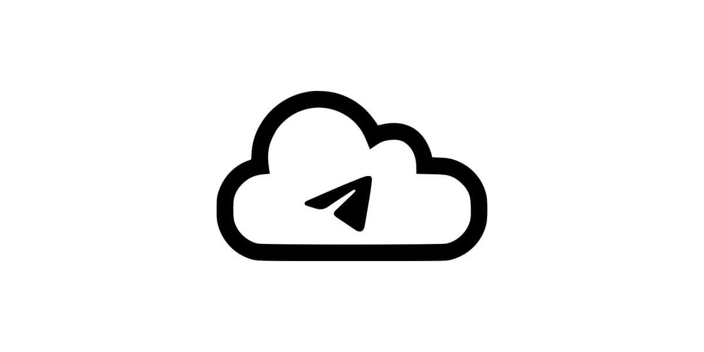

电报有会员吗？
是的，Telegram推出了一个名为“Telegram Premium”的付费会员服务。这是一个订阅服务，提供额外的功能和改进，如更快的下载速度、更大的文件上传限制和独家表情等，旨在为用户提供更加丰富的使用体验并支持Telegram的持续开发。

了解Telegram Premium会员
Telegram Premium的基本介绍
- 提供额外功能：Telegram Premium是Telegram的付费订阅服务，旨在为用户提供额外的功能和改进体验。这包括更大的文件上传限制、更快的下载速度以及访问独家表情和动态贴纸等。
- 增强用户体验：订阅后，用户可以享受无广告的使用环境，同时增加了对话窗口的个性化选项，如聊天背景和界面主题。此外，Premium用户还可以先于其他用户体验新功能。
- 支持开发与创新：通过订阅Premium，用户直接支持Telegram的开发和运营，帮助保持应用的独立性和不断创新。这种支持使得Telegram可以继续提供高质量的服务，同时不依赖传统的广告模式。
Telegram Premium的成本和订阅计划
- 订阅费用：Telegram Premium的费用因国家和地区而异，通常价格在4至6美元之间。这个费用是每月收取，用户可以随时取消订阅。
- 多平台订阅：用户可以在任何支持的设备上订阅Telegram Premium，包括Android、iOS以及桌面应用。一旦订阅，所有设备上的Telegram账号都能享受Premium的好处。
- 灵活的支付选项：Telegram提供多种支付方式订阅Premium服务，包括信用卡、PayPal及其他地区特定的支付方法。这提供了灵活性，方便用户根据自己的喜好和可用的支付方式进行订阅。
Telegram Premium的独家功能
增加的文件上传大小和下载速度
- 提升上传限制：Telegram Premium用户享受到的最大文件上传大小为4GB，相较于非付费用户的2GB限制显著提高。这一特性尤其适合需要传输大量数据或大文件的专业人士和内容创作者。
- 加快下载速度：除了提高文件上传上限，Telegram Premium还提供了更快的下载速度。这意味着无论是下载大型文件还是从云端恢复聊天记录，用户都能体验到更快的速度，从而节省时间并提升效率。
- 优先数据传输：Premium用户在网络拥堵时期也会享有数据传输的优先权。这个优先级的提升确保了即使在高峰期，用户的文件上传和下载都能保持较高的速度，提高了使用的便利性和满意度。
独家表情符号和动态贴纸
- 访问独家表情包：Telegram Premium用户有权使用专为他们设计的独家表情符号。这些表情包括了一系列独特、有趣的表情，可以用于聊天中表达情绪，使对话更加生动有趣。
- 动态贴纸体验：除了独家静态表情外，Premium用户还能使用动态贴纸，这些贴纸在表达情绪时更加生动和互动。动态贴纸为对话增添了额外的乐趣和视觉吸引力。
- 定期更新内容：Telegram承诺为Premium用户提供定期更新的表情符号和贴纸库。这意味着用户可以期待不断获取新的和独特的内容，以保持聊天体验的新鲜感和吸引力。

如何订阅Telegram Premium
订阅Telegram Premium的步骤
- 打开Telegram应用：首先，确保您的Telegram应用是最新版本，然后在应用内打开“设置”菜单。
- 找到Premium选项：在设置菜单中，查找并点击“Telegram Premium”选项。这一选项通常会展示所有Premium特权和功能介绍。
- 选择订阅并支付：在了解所有特权后，选择订阅按钮并进行支付。支付过程支持多种方式，包括信用卡、PayPal等，根据您所在地区的不同可能会有不同的支付选项。
如何管理和取消Telegram Premium订阅
- 查看当前订阅状态：在任何时候，您都可以通过访问Telegram设置中的“Telegram Premium”部分来查看您的订阅状态和续订日期。
- 管理订阅选项：在同一部分，您可以修改订阅相关的设置，如更改支付方式或更新支付信息。Telegram也允许调整一些优先级功能，如数据使用偏好。
- 取消订阅：如果决定取消Telegram Premium订阅，可在“Telegram Premium”设置页选择取消订阅。取消后，订阅将在当前支付周期结束时失效，而直到那时，您仍然可以享受所有Premium特权。

Telegram Premium的优势
支持更快的数据同步
- 高效的同步机制：Telegram Premium用户享受到的数据同步速度更快，这意味着无论是在多个设备间同步消息还是恢复聊天记录，时间消耗都大大减少。这种高效的同步机制尤其对于那些需要在多个设备上实时保持信息更新的用户来说，极为重要。
- 优先数据处理：Premium用户的数据处理在服务器中享有更高的优先级。这不仅保证了同步过程的速度，还确保了在网络高峰期，Premium用户的数据传输不会受到影响。
- 增强的稳定性和可靠性：快速数据同步还带来了更稳定可靠的用户体验。用户可以依赖Telegram Premium提供的服务，在任何时间、任何网络条件下都能保持通讯的流畅和数据的最新。
提供更多的个性化设置选项
- 定制化聊天界面：Telegram Premium提供了更多的个性化设置选项，允许用户根据个人喜好定制聊天界面。这包括选择主题颜色、背景图案以及字体样式等，使用户可以创造独一无二的聊天环境。
- 独家表情和贴纸：除了界面定制，Premium用户还可以使用独家表情符号和动态贴纸。这些独特的内容不仅增添了聊天的趣味性，也使得表达更加丰富和个性化。
- 高级消息管理工具：Telegram Premium还提供了高级的消息管理工具，比如可以设置消息自动删除的时间更长，以及更详细的群组管理权限。这些工具为用户提供了更多控制权，帮助他们更有效地管理聊天历史和群组互动。
Telegram免费版与Premium版的比较
功能对比概述
- 基本功能：Telegram的免费版为用户提供了全面的即时通讯功能，包括文本消息、语音通话、视频通话、群组聊天以及文件共享等。这些功能已足以满足大多数用户的基本需求。
- 额外功能：相比之下，Telegram Premium则提供了增强的功能，例如更大的文件上传限制（高达4GB）、更快的下载速度以及访问独家表情和动态贴纸等。Premium版本还移除了广告，提供了更为丰富的个性化选项。
- 用户体验：在用户体验方面，Premium版本因为拥有更快的数据同步速度和优先级高的服务器资源，使得用户在使用过程中能感受到更流畅和稳定的体验。
是否值得升级到Premium
- 需求基础：是否升级到Telegram Premium主要取决于用户的具体需求。如果您经常需要发送大文件，或者希望获得更快的数据处理速度，Premium版本显然是更合适的选择。
- 成本效益：从成本效益角度考虑，尽管Premium版本需要支付月费，但提供的额外功能和改善的用户体验可能会使得这一投资物有所值，特别是对于那些对通讯质量和功能有较高需求的商业用户。
- 个人化与支持：除了基本功能外，Premium版本还支持Telegram的持续发展，并允许用户享受更多的个性化设置和高级用户支持。如果这些因素对您来说很重要，那么升级到Premium可能是一个明智的决定。
电报的会员服务是什么？
Telegram提供了一个名为Telegram Premium的会员服务，这是一个付费订阅服务，提供了一系列增强功能，如更大的文件上传限制、更快的下载速度、独家表情和广告移除等。
Telegram Premium会员的费用是多少？
Telegram Premium的费用因国家和地区而异，通常在每月4至6美元之间。具体价格可在应用内的Premium页面查看。
订阅Telegram Premium后，我能得到哪些特权？
订阅Telegram Premium后，用户可以上传和下载高达4GB的文件，享受更快的数据加载速度，使用独家动态表情和贴纸，以及访问高级聊天管理功能和无广告体验。
其他新闻
电报怎么用虚拟手机号注册？
要用虚拟手机号注册电报，首先通过虚拟号码服务（如TextNow、Google Voice）获取一个号码。然后在 […]
2024 年 12 月 01 日

Telegram云端文件存在哪？
Telegram的云端文件存储在Telegram的服务器上。所有未下载到本地的文件都会保存在云端，并且可以通过 […]
2024 年 10 月 18 日
电报群怎么升级超级群？
要将Telegram群组升级为超级群，首先需要是群组管理员。然后，进入群组设置，点击“编辑”按钮，选择“升级为 […]
2024 年 10 月 04 日

Telegram删除聊天记录对方还能看到吗？
如果你在Telegram删除了聊天记录，只有你自己的设备上的记录会被删除，对方的聊天记录依然存在，除非你使用的 […]
2024 年 11 月 16 日